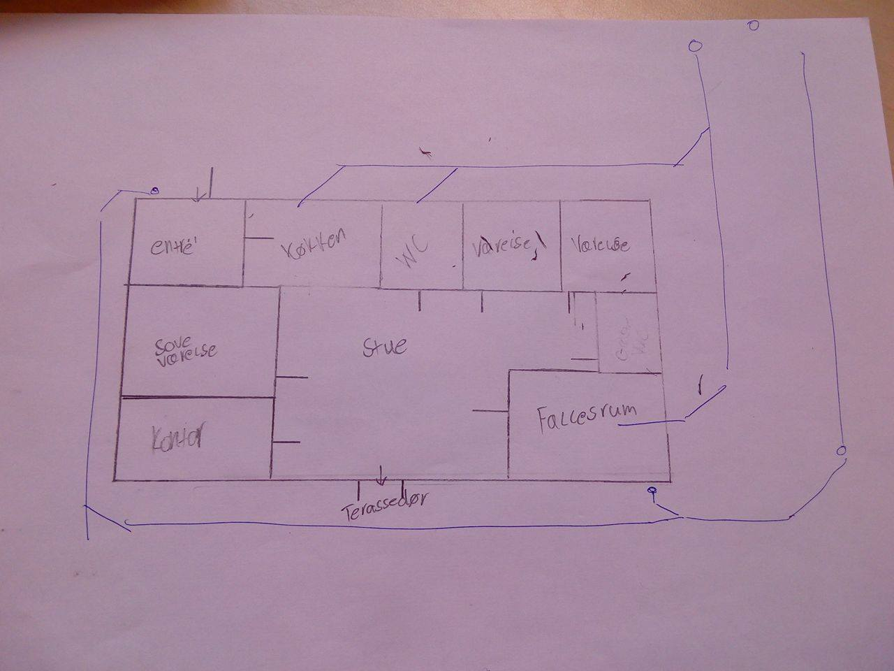

VORES DRØMME HUS
Økonomi
1. Hvad er den smalede pris på opførelsen af byggeriet.
Svar til opg. 1 Den samlede pris på byggeriet er 1.968.000 kr.(uden grund) koster ca 968.000 kr. i materialer
2. Giv et overslag på hvor langtid håndværkerne skal bruge på at bygge huset og herunder hvor mange penge der skal bruges på arbejdsløn
Svar til opg. 2 Vi vil tro at det ca tager 5-6 måneder at bygge og det vil komme til at koste en millione i arbejdsløn. Hvis der går 2 mand i 8 timer hver dag i 5 måneder
3. Giv et overslag på hvad de større materialeposter koster - herunder tag, vinduer og døre, fundament, vægge samt inventar.
Tag og solcelleanlæg
-- 109.000 kr.
-- 200.000 kr.
Muren
-- Mursten, Isolering, Vinduer og døre og EL
-- 300.000 kr.
Fundament
-- 35.000 kr.
El
-- 119.000 kr
Belægning
-- Fliser 20.000 kr.
Maling
-- 21.000 kr.
Gulv
-- vinylgulv, gulvunderlaget og Klinker.
-- 65.000 kr.
Inventar
-- Badeværelse, køkken og bryggers
-- 115.000
4. Hvad kunne i gøre for at engergioptimere huset så familiens månedlige omkostninger bliver lavere? Hvor meger kunne familien eksempelvis spare på, at have solceller og efter hvor mange år ville de have tjent sig hjem?
Svar til opg. 4 Hvis man har solceller kan man spare fra 7.000kr. til 12.000kr. De ville ikke tage så mange år at tjene de penge hjem igen, der hvor vi fandt tallene står der at det kun ville tage omkring 7-10 år.
Kloak

Kloaken koster 5000kr. + arbejdsløn og der er blevet brugt 59 rør
Paphuset
Her snakker vi lidt om paphuset